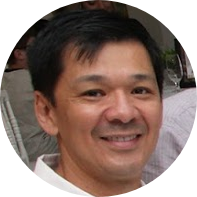

|  |
André Luiz BankiDevelopment Manager on AltoQi TecnologiaCivil Engineer with 20+ years of experience in the management of software development projects, including technical research, requirements assessment, team coordination and process improvement activities. Strong formation in Structural Engineering, Software Engineering and Project Management. Responsible for the entire technical design in the development of complex CAD-based software tools in the field of Civil Engineering, which are used by 40,000+ professionals in Brazil. Responsible for the conception, customization and implementation of a Scrum-based agile software development methodology. Certified PMP, RUP, Scrum and SAFe professional. |
| Development Manager | (2007 – today) | |
|---|---|---|
| S3Eng Tecnologia Aplicada à Engenharia S/A (www.altoqi.com.br) | ||
|
Design and implementation of an automated regression testing
framework applied for the legacy company systems. Participation as
main technical specialist in all the evolutionary projects of the
company's products. Managing of the development team, now consisting
of Programmers, Test Engineers and Requirement Engineers. Design and
implementation of Change Control, Version Control, Project
Management and Scrum-based Iterative Development software
methodologies. Design and implementation of a custom software
estimative methodology.
|
| |
| Current projects | Design, planning and management of QiBuilder project, which will reengineer the line of products related to plant design (Hydros, Lumine and QiCAD). Implementation of the collaborative software development model (Eberick Next project). Adaptation of the software development process to MPS.BR level G model. | |
| Technical Coordinator | (2001 – 2006) | |
|---|---|---|
| S3Eng Tecnologia Aplicada à Engenharia S/A (www.altoqi.com.br) | ||
| Activities | Simultaneous coordination of the Development and Technical Support Departments. At Development Department, responsible for the evolution of the products AltoQi Eberick (new modules for Stairs, Slabs, Walls and Tanks design and adaptation of the program to new NBR 6118:2003 regulation) AltoQi Hydros (new modules for Fire and Gas design and new version V4) and AltoQi Lumine (new module for Cabling design and new version V4) as well as the creation of the QiCAD product and its Reinforcement Editor module. At Support Department, design and implementation of a help desk control system (Top Suporte), creation of the Knowledge Base and Technical Journal, which was sent periodically to customers between 2001 and 2004. | |
| Consultant (independent) | (1998 – 2005) | |
|---|---|---|
| Activities | Structural design of reinforced concrete buildings, structural design of prestressed and reinforced concrete bridges, structural analysis of special structures using Finite Elements Method. | |
| Civil Engineer | (1995 – 2000) | |
|---|---|---|
| AltoQi Tecnologia em Informática Ltda (www.altoqi.com.br) | ||
| Activities | Responsible for the development of the products AltoQi Eberick (structural design of reinforced concrete buildings), AltoQi Hydros (piping design of buildings) and AltoQi Lumine (electrical design of buildings), including technical research, requirements gathering, system testing and programmers team leadership. Elaboration of technical documentation, including reference and user tutorials. Direct contact with customers, encompassing technical support and participation in events. | |
| Lato Sensu Post-Graduation Course in Web and Mobile Development | (2016 – 2017) | |
|---|---|---|
| SENAI-SC – Technology College | ||
| Article | “O papel da Integração Contínua no contexto do desenvolvimento ágil aplicado a projetos com múltiplas equipes”. | |
| Lato Sensu Post-Graduation Course in Software Engineering with UML | (2007 – 2008) | |
|---|---|---|
| SENAI-SC – Technology College | ||
| Dissertation | “Comparative Analysis of the Rational Unified Process (RUP), the Extreme Programming (XP) and the Scrum”. | |
| Scientific production | 3 articles published in electronic journals (in the area of Software Engineering). | |
| Mastership in Civil Engineering | (1997 – 1999) | |
|---|---|---|
| Universidade Federal de Santa Catarina (UFSC) | ||
| Concentration Area | Structural Design. | |
| Dissertation | “Study of the inclusion of the geometric nonlinearity in the structural design of buildings”. | |
| Scientific production | 10 complete articles published in technical congresses and seven articles published in electronic journals (in the areas of Structural Analysis, Regulatory Provisions and Reinforced Concrete Design) | |
| Graduation in Civil Engineering | (1990 – 1994) | |
|---|---|---|
| Universidade Federal de Santa Catarina (UFSC) | ||
| Awards | Medal of Student Merit for the 1st place in 94/2 Civil Engineering class | |
| 2018 | Revit Essentials. 40h. Van Marc. |
| 2016 | Leading SAFe 4.0. 16h. Scaled Agile Inc. |
| 2013 | Development of Architectural Requirements. 16h. Instituto de Gestão em Tecnologia da Informação (iGTi). |
| 2012 | Business Process Management (BPM). 16h. Euax Gestão de Projetos. |
| 2012 | Better Developer. 16h. Márcio Marchini Consulting. |
| 2012 | Dale Carnegie Course: Effective Communication and Interpersonal Skills . 48h. Dale Carnegie Training. |
| 2011 | Projeto de Concreto Armado para Estruturas Pré-Fabricadas. Carga horária total: 12h. Instituto IDD. |
| 2009-2010 | Brazilian Model of Process Improvement – MPS.BR (Overview, Project Management, Portfolio Management, Requirement Management, Quality Assurance and Measurement). Total hours: 52h. Incremental Tecnologia. |
| 2009 | Preparatory for PMP Certification. Hours: 36h. Euax Gestão de Projetos. |
| 2008 | Certified Scrum Master. Hours: 12h. Caelum. |
| 2008 | Project Management. Hours: 48h. Euax Gestão de Projetos. |
| 2008 | Development Teams Management. Hours: 24h. Serviço Nacional de Aprendizagem Industrial (SENAI-SC). |
| 2005 | Infra Structure for Cabling Systems Design. Hours: 40h. Serviço Nacional de Aprendizagem Comercial (SENAC-SC). |
| 2004 | Fundamentals of Electrical Design of Buildings. Hours: 24h. AltoQi Tecnologia em Informática Ltda. |
| 1994 | Finite Elements Method Special Course. Hours: 40h. Universidade Federal de Santa Catarina (UFSC). |
| 1992-1993 | University extension in System Analysis. Hours: 900h. Associação Catarinense de Ensino e Informática (ACEI). |
| 2016 | SAFe Agilist 4.0 (SA) |
| 2009 | Project Management Professional (PMP) |
| 2008 | Certified Scrum Master (CSM) |
| 2007 | IBM Certified Solution Designer – Object Oriented Analysis and Design, vUML 2 |
| 2007 | IBM Certified Solution Designer – Rational Unified Process 7.0 |
| 2005 | Furukawa Certified Professional (FCP) - Master |
| Understands | Spanish (⭐⭐⭐), English (⭐⭐⭐⭐). |
| Speaks | English (⭐⭐⭐⭐) |
| Reads | Spanish (⭐⭐⭐), English (⭐⭐⭐⭐⭐) |
| Writes | English (⭐⭐⭐) |